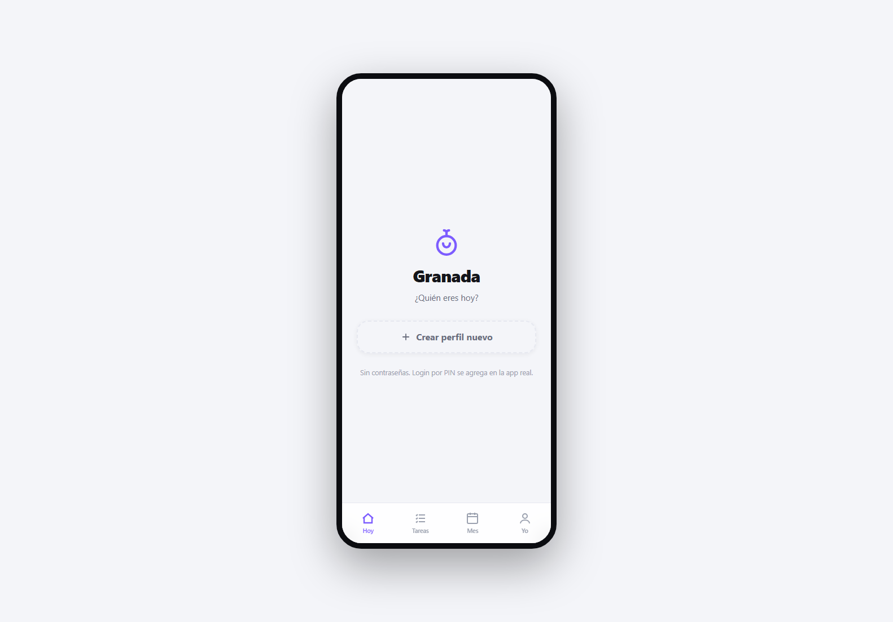
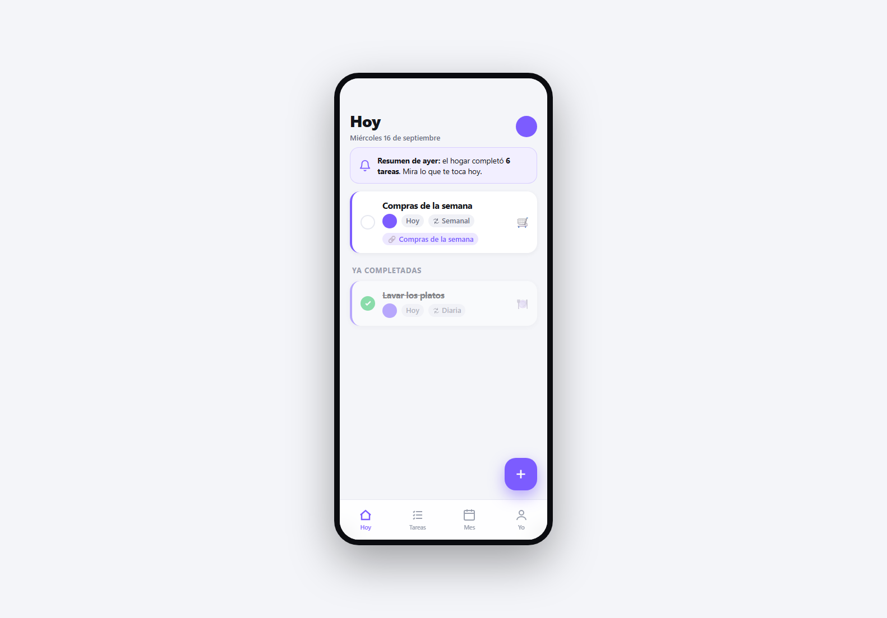
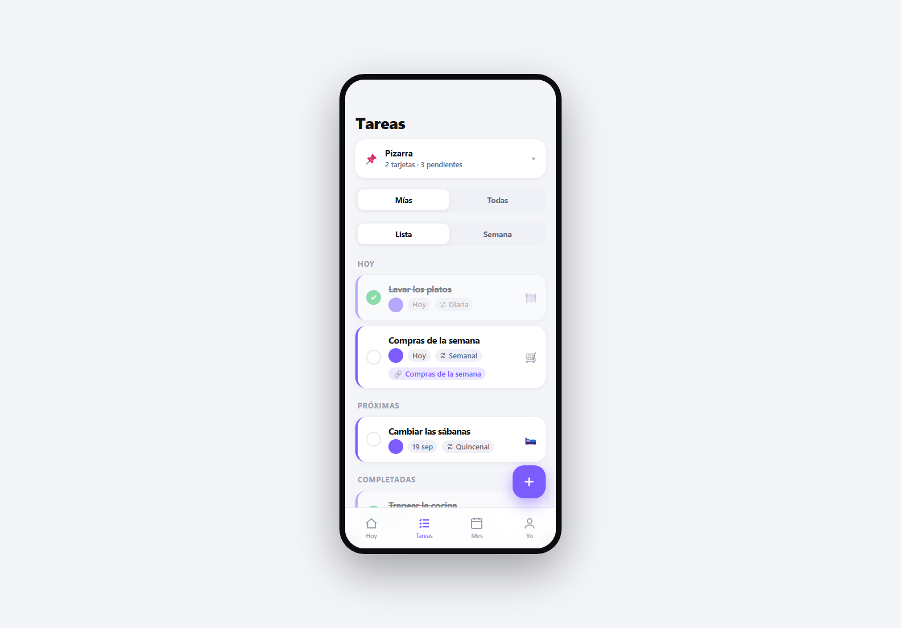
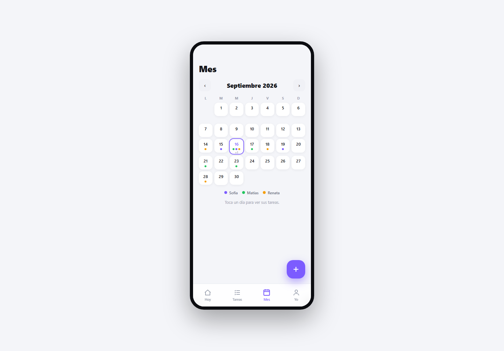
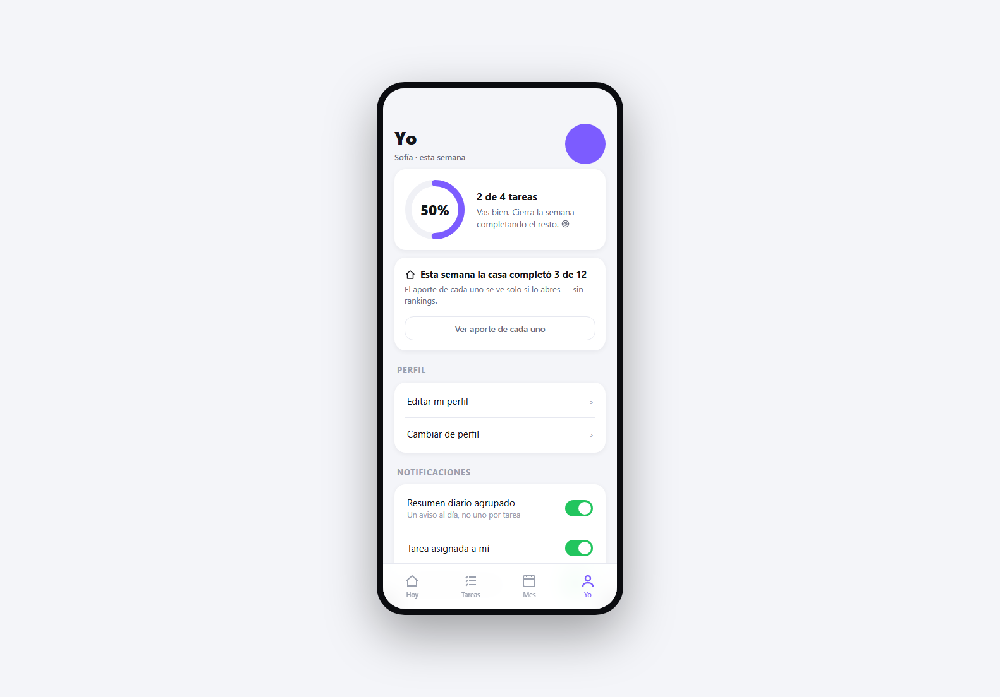

Repartir las tareas de una casa entre tres personas sin que nadie tenga que llevar la cuenta.

Granada es una aplicación web instalable que reparte y sincroniza las tareas domésticas de un hogar de tres personas. Cada quien ve lo que le toca, marca lo que hizo, y el resto lo ve al instante desde su propio teléfono. Es el único de estos proyectos con usuarios reales y uso sostenido: no es un prototipo que se enseña, es algo que se usa todos los días.
Casi todo lo interesante está en las decisiones de producto, no en el código. El color identifica a la persona, nunca la urgencia de la tarea: un sistema de colores por prioridad convierte la casa en un tablero de reproches. No hay chat interno, porque el hogar ya conversa por WhatsApp y una segunda bandeja de entrada solo agrega un lugar más donde no responder. Y el balance se muestra en positivo y sin ranking: se ve lo que cada persona aportó, no quién va ganando. Meter competencia entre convivientes era la forma más rápida de que la aplicación durara una semana.
Técnicamente es deliberadamente simple: un solo archivo HTML autocontenido con JavaScript sin framework y un service worker propio, contra una base de datos con sincronización en tiempo real. Es el proyecto más iterado de todos (doce versiones a lo largo de casi un mes) y el único que recibió la segunda semana de trabajo que al resto le faltó.




{kind=link}
{kind=link}
{kind=link}
{kind=link}
{kind=link}